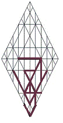

|
hlywj חןילה Havilah |
 | villa; circular; a spiral staircase; land of spirals: argumentative l debate hywj . |
|||||||||
|
A glimpse j of
new horizons w brings
y a
change
l
in expectations
h;
but obligations
j
tie us down w,
holding us back y,
preventing us from following
l
our Vision
h.
Whether ready or not, should we commit ourselves
j
to simply trying w,
HaShem will supply
y
guidance and direction l
for our dreams h.
We've been rightly taught that everything
must come to balance, and that to indulge
j
whims w
by willpower
y
involves l risk h
because it upsets
j equilibrium
within the present—such as it is w—in
exchange y
for outcomes
l that
are unknown
h.
Among the variables is the likelihood that subsequent effort
j to
mitigate and balance
w unintended
effects
y of
change we have adopted is likely to be more difficult l.
When options are ours to choose, unknown consequences tend to multiply
h;
and thus, ambitious people j become
slaves w to
their own choices y,
which are thwarted l
by actual outcomes. Expectations h
envisioned j
within a moment of time are vanity; for, at the end of time, all paths
must converge w,
and to insist on a right to exercise the will y
apart from the Shepherd’s guidance is likely to require corrective l measures h.
If sanctions should come, they will come in
answer to choices we have made, in accordance with the logic implicit in
the letters of the Name
hwhy;
for the exercise of will
y
has consequences
h
that must be weighed
w
against difficulties of reintegration
h;
for as choices are made, the baton passes from action to reaction as the
Wheel of Life turns on.
It’s not that ambition
j is
a problem, in itself w,
but that ambitious pursuits
y
can drag us along by their momentum
l,
binding h us
in ambition’s grip more tightly than we can presently foresee j,
in which case it would have been better for us to have limited w the
exercise of will on our own initiative
y,
that HaShem might better meet the demands l of
our hidden life h
as One.
Gematria 59
fn:
Numerology 41
am
>
5
h:
Targum:
Together with our companions j,
we do well to offer w our
wills
y to
the Shepherd l;
for we serve One Life h. |
|||||||||||
|
|||||||||||